# VAE-Stega：基于变分自编码器的语言隐写技术
# 摘要
近年来，基于文本自动生成技术的语言隐写技术得到了极大的发展，这是一个非常有前途的研究课题，但也是一个非常具有挑战性的研究课题。以往的工作主要集中在优化语言模型和条件概率编码方法，旨在生成质量更好的隐写句子。本文中报道了一些最新的实验结果，这似乎表明生成的隐写文本的质量不能完全保证其隐写文本的安全性，甚至具有显著的感知不可感知和统计不可感知冲突效应 (Psic 效应)。为了进一步提高生成的隐写文本的不可感知性和安全性，本文提出了一种新的基于变分自编码器 (VAE) 的语言隐写技术，可称为 VAE-Stega。我们使用 VAE-Stega 编码器学习大量正常文本的整体统计分布特征，然后使用解码器 VAE-Stega 生成隐写句子符合统计语言模型以及整体正常句子的统计分布，以保证生成的隐写的不可感知和统计不可感知文本。我们设计了几个实验来验证所提出的方法。实验结果表明，该模型可以大大提高生成的隐写句子的不可感知性，从而达到了最先进的性能。
# 介绍
从理论上讲，任何具有冗余信息空间的载体都可以用来隐藏内部的秘密信息，例如图像、视频、文本等。
Fridrich 总结说，一般隐写算法可分为三类：载体选择、载体修改和载体生成。基于载体生成的隐写术与其他两种方法的最大区别是：另外两种隐写方法将得到一个具有完全语义的载体，然后将秘密信息隐藏在里面。然而，基于载体生成的隐写方法需要自己生成载体。
两大挑战：
- 如何自动生成一个语义完整、足够自然的信息载体
- 即使可以解决第一个挑战，如何进一步保证这些生成的隐写载体
的不可感知性
本文将从理论分析、模型设计和实验结果等角度来回答这些问题。首先遵循 Cachin 对隐写算法安全性的分析，指出文本隐写的核心目标是尽可能减少正态文本和隐写文本之间的统计分布差异，如下图所示。
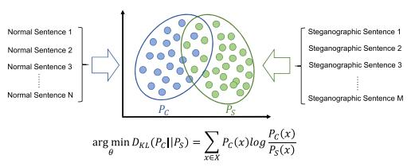
其次，我们报告了我们最新的实验结果，这些结果表明，生成的隐写文本的质量并不完全等同于它们的不可感知性。为了进一步阐明
这两个概念之间的区别，我们将文本的不可感知性分别分为感知 - 不可感知性和统计 - 不可感知性两部分。第三，为了进一步提高生成的隐写文本的不可感知性，本文提出了一种基于变分自编码器 (VAE) 的语言隐写技术，可称为 VAE-Stega。利用 VAE-Stega 中的编码器学习正常文本的总体统计分布特征，然后利用 VAE-Stega 中的解码器生成符合统计语言模型和总体统计分布的隐写句子，从而保证生成的隐写文本的感知不可感知性和统计不可感知性，从而提高整个秘密通信处理的安全性。
# 相关工作
目前，大多数的隐写文本自动生成模型在以下框架下：使用一个精心设计的模型学习统计语言模型从大量的正常句子，然后实现秘密信息隐藏通过编码的条件每个词的概率分布在文本生成过程。在此框架中，早期的工作主要使用马尔可夫模型来近似语言模型，并计算每个单词、的条件概率分布。然而，由于马尔可夫模型本身的局限性，马尔可夫模型生成的文本质量仍然不够好，因此很容易被识别。近年来，随着自然语言处理技术的发展，越来越多的基于神经网络模型的隐写文本生成模型出现了。首先将字典划分，对每个单词进行固定编码，然后使用递归神经网络 (RNN) 学习自然文本的统计语言模型。最后，在文本生成过程中，根据需要隐藏的信息在每一步选择不同的单词作为输出。本文中将编码过程改为基于条件概率分布的动态编码，提出使用完整的二叉树或霍夫曼树对每个单词的条件概率进行固定长编码 (FLC) 或变长编码 (VLC)，并根据需要隐藏的秘密信息输出相应的单词，实现隐藏信息在句子生成过程中的嵌入。随后进一步提出了一种改进的编码算法称为 patient-Huffman，利用每个单词的条件概率分布的差异 (KL) 生成过程中动态调整每个单词的嵌入率，进一步提高生成的隐写文本的质量。
这些基于神经网络的文本自动生成方法比马尔可夫模型能更好地拟合正常句子的统计语言模型，从而显著提高了生成的隐写文本的质量。但最新的实验结果表明，这些方法只能解决第一个挑战，即自动生成语义完整和足够自然的隐写句子。
# Psic 效应
以往基于神经网络的隐写文本生成模型旨在尽可能多地生成具有最优条件概率的单词序列。这一优化目标只能保证生成的高质量的隐写文本。但是生成的隐写句子的质量越好，它们的不可感知性是否优秀存疑，因此本文做了一些实验来验证这个猜想。
首先，我们在 IMDB 数据集上训练 RNN-Stega 模型，然后使用训练后的 RNN-Stega 模型在每个不同的嵌入速率下生成 1000 个隐写句子。其次，我们计算了这些生成的隐写句子在不同嵌入率下的平均复杂度。在自然语言处理领域，困惑度 (perplexity) 是语言模型测试的标准度量。通常，困惑度值越小，生成的句子的语言模型越好。第三，我们混合了不同嵌入率的句子，然后我们严格遵循双盲实验的要求并邀请 11 名经过英语表达和阅读能力筛选的人对这些句子的质量进行评分（1-5 分，越高越好）。我们计算了这些生成的隐写句子在不同嵌入率下的平均人类得分，这可以代表这些生成的句子的主观质量。最后，我们将不同嵌入率的隐写句子与相同数量的正常句子混合，然后使用最近提出的文本隐分析模型进行检测。我们重复了这个实验 10 次，记录不同嵌入率下的检测精度的平均值和标准偏差。实验结果 1 如下图所示，其中横坐标表示每个单词中嵌入的比特的平均数量 (bpw)。橙色的线表示这些生成的隐写句子中计算出的平均困惑度（越小越好）。点的大小和透明度代表了人类的平均得分（越大越好）。蓝线表示不同嵌入率下的隐写检测精度（越低越好）。
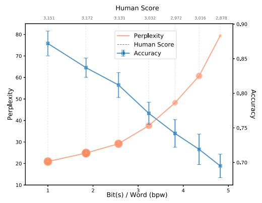
根据上图，我们可以得出以下结论。首先，随着嵌入率的增加，生成的隐写句子的困惑度趋势和人的得分是一致的，它们都表明生成的隐写句子的质量在下降。同时，我们发现生成的隐写句子的质量并不等同于它们的不可感知性。当 bpw 小于 2 时生成的隐写句子质量最好，但最容易发现；当 bpw 在 5 左右时，生成的隐写句子质量最差，但其抵抗隐分析的能力最强。第三，我们注意到一个非常不寻常的现象：随着嵌入率的增加，隐写检测的准确性逐渐降低，这意味着生成的隐写句子更加难以检测。
在最近的一个预印本中也报告了类似的实验结果。实验表明，随着嵌入率的增加，生成的隐写句子与正常句子的条件概率分布的 KL 散度逐渐减小（越低越好），但人类评价得分也逐渐减小。这种现象似乎与我们通常的认知方式有所不同。一般来说，我们认为随着嵌入在载体中的附加信息量的增加，载体的不可感知性将会降低，这将反映在隐写分析精度的提高上。为了进一步解释这一异常现象，我们进行了更深入的实验分析。我们计算了每个生成的隐写句子在不同嵌入率下的困惑度，并进行了比较与正常句子的分布情况相同。结果如下图所示：
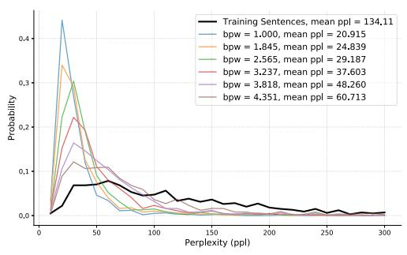
上图可以很好地解释小节 Pisc 小节中的现象。公共社交网络上的文本是由不同年龄和背景的人以不同的表达方式编写的句子。这就导致了大多数人类所写的事实句子可能不服从最优语言模型，形成较大的方差。之前的自动文本生成隐写模型主要侧重于优化每个单词的条件概率分布的语言模型和编码方法，主要解决第一个挑战。
随着嵌入率的提高，生成的隐写载体的质量和反隐写分析能力的不同趋势代表了这些生成的隐写载体的两个不同方面，我们将它们命名为感知 - 不可感知性和统计 - 不可感知性，如下图所示。感知不可感知性衡量的是生成的隐写载体的质量，而统计不可感知性衡量的是生成的隐写载体与正常载体之间的统计不可分性。
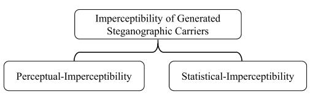
# TS-VAE METHODOLOGY
# 变分自动编码器的结构
一个变分的自动编码器符合一般的自动编码器架构，它通常是映射的单个样本 x 通过编码器到一个特征空间 z∈Z，然后使用解码器将该特征重构为一个原始样本，即：
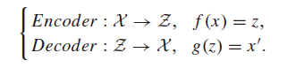
然后，通过最小化重建的样本 x' 与原始样本 x 之间的差值，我们可以得到从样本空间到特征空间的最优映射。然而，自动编码器只学习样本与特征之间的点对点映射，因此解码器只能重建原始样本，而不能生成新的样本。由于统计不可感知性要求生成的隐写句子与正态句子的统计分布足够接近，因此我们的基本思想是找到一个编码函数，将正态句子嵌入到一个潜在空间 Z 中，形成 Pz 分布。然后，我们可以根据潜在空间的分布进行随机采样，得到一个采样的潜在向量 z。我们将这个向量 z 发送到解码器中，然后在 z 的约束下生成一个句子，从而保持生成的句子的分布与正常句子的分布一致。
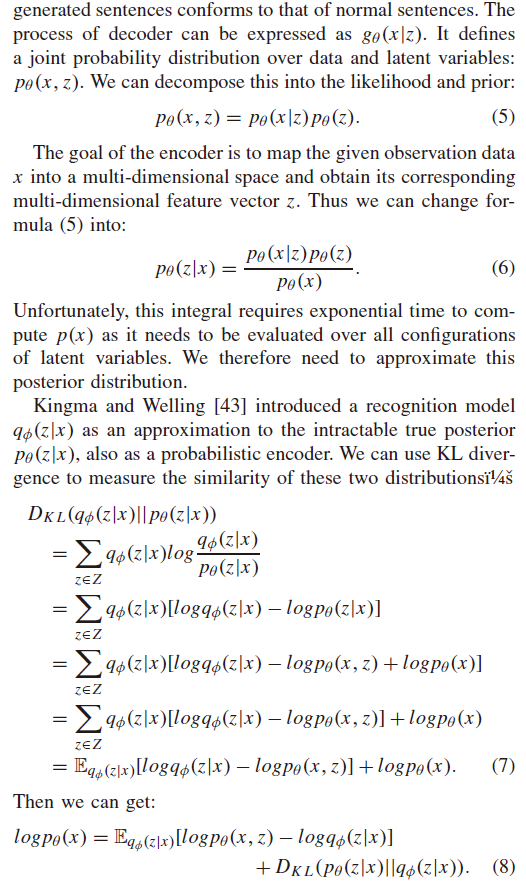
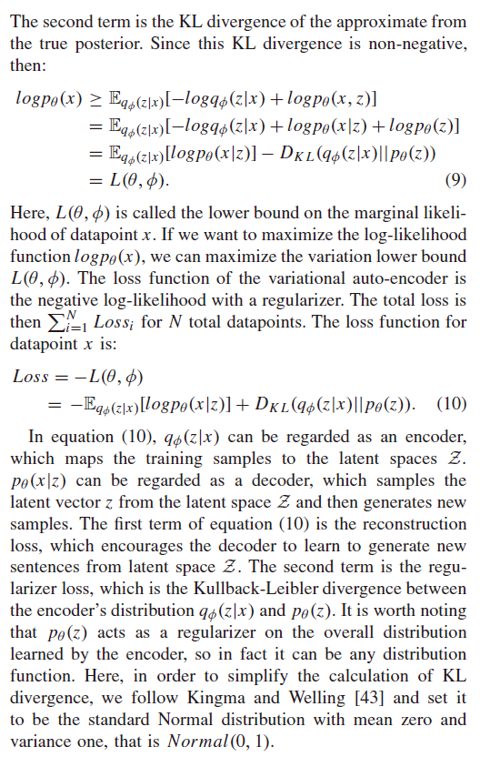
# Encoder in VAE-Stega
在 VAE 架构中，任何模型都可以作为编码器使用，只要它可以提取输入句子的特征表达式并将其映射到特征空间 Z。在本文中，我们设计并比较了两种不同的编码器，其中一种他们使用一个以 LSTM 单元作为编码器的递归神经网络，我们称之为 VAE-Stega (LSTM-LSTM)。另一种是使用来自变压器 (BERT) 的双向编码器表示作为编码器，我们称之为 VAE-Stega (bertlstm)。
VAEStega (bertlstm) 结构如下图所示：
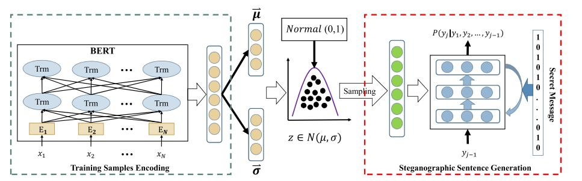
# Decoder in VAE-Stega
RNN 可以从大量的正常文本中学习统计语言模型，然后根据之前生成的单词计算下一个单词的条件概率分布，最后可以生成符合该统计语言模型的句子。
对于 VAE-Stega (LSTM-LSTM)，它与 VAEStega (bertlstm) 共享相同的模型结构和相同的解码器，唯一的区别是编码器模块。VAE-Stega (LSTM-LSTM) 使用了一个以 LSTM 单元为编码器的递归神经网络。它使用最后一个时间步中最后一个隐藏层的输出作为输入句子的特征表达式。因此，对于 VAE-Stega (LSTM-LSTM)，我们只需要用以下形式替换公式：
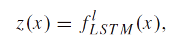
其中，l 表示 VAE-Stega (LSTM-LSTM) 编码器中的隐藏层数。提取输入句子的特征表达式后，后续操作与上述 VAEStega (BERT-LSTM) 完全一致。
# 信息的隐藏和提取
与之前的隐写文本生成算法，如 RNN-Stega 模型相比，所提出的 VAE-Stega 模型在译码每个隐写句子的过程中，需要使用从潜在空间采样的相同的潜在向量。在实际使用中，由于计算机只能生成伪随机数，发送方和接收方只需要共享随机种子生成算法，以确保采样的潜在向量同步，从而确保在接收到的隐写文本中正确提取秘密信息。在每个时间步长中，Bob 将每个单词输入到相同的训练模型中，并得到下一个单词的条件概率分布。他首先将字典中的所有单词按概率降序排序，并选择顶部的 m 个单词形成候选池。然后，他使用与发送者相同的编码方法对候选池进行编码，如霍夫曼编码或算术编码。最后，根据当前时刻的实际传输字，接收器能够成功、准确地解码每个字中嵌入的位，从而完成隐蔽通信。
# 实验和分析
在本节中，我们进行了几个实验来测试所提出的 VAE-Stega 模型的性能。首先，我们介绍了我们在实验中使用的数据集，以及模型设置和训练细节。然后，我们主要分析了该模型生成的隐写句子的不可感知性。
# 数据准备和模型训练
在这项工作中，我们使用了两个大规模的公共文本数据集来训练我们的模型，它们分别是推特和 IMDB 电影评论。预处理后，包括将所有单词转换成小写，删除特殊符号，表情符号，web 链接和过滤低频单词，推特数据集包含 2639083 正常句子字典大小为 44856，IMDB 数据集包含总共 1282804 正常句子字典大小为 48042。VAE-Stega 模型中几乎所有的参数都可以通过训练得到，但仍有一些超参数需要确定。
通过多次比较实验，将这些超参数最终设置如下。对于解码器，我们使用与 RNN-Stega 相同的设置来生成句子，即我们将 LSTM 隐藏层数设置为 3 个，每一层包含 800 个 LSTM 单位。我们使用了 BERTbase 作为 VAE-Stega (BERT-LSTM) 中的编码器，其中包含 12 个 Transformer 块，隐藏大小 768，自注意头 12 个。我们将潜在空间的维数 (dimension of latent space) 设为 13，高速公路层数 (Highway layers) 为 2，隐藏维数为 1600。对于 VAE-Stega (LSTM-LSTM) 模型中的编码器，我们将其设置为与解码器相同。字典中的每个单词都被映射到一个 353 维的向量，我们使用 tanh 作为非线性激活函数。
神经网络的所有参数都需要通过训练来获得。在训练过程中，我们使用反向传播算法更新网络参数。通过最小化损失函数，我们希望所提出的模型能够同时学习正常句子的统计语言模型及其整体分布模式。在模型训练过程中，我们采用了 KL 代价退火策略，使模型能够更好地考虑语言模型和总体统计分布约束，使得解码器生成的隐写句子具有较高的感知不可感知性和统计不可感知性。
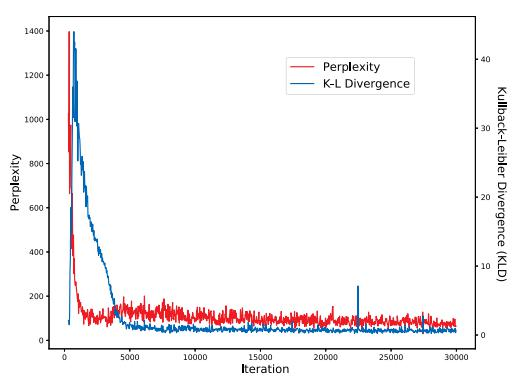
# 不可感知分析
为了测量所提出的 VAE-Stega 模型生成的隐写句子的不可感知性，根据之前的分析，我们需要对生成的隐写句子的语言模型进行测试，以困惑度 (ppl) 来衡量；另一方面，我们需要测试生成的隐写句子与正常句子的总体分布的差异，后者用 KLD 和 JSD 来测量。
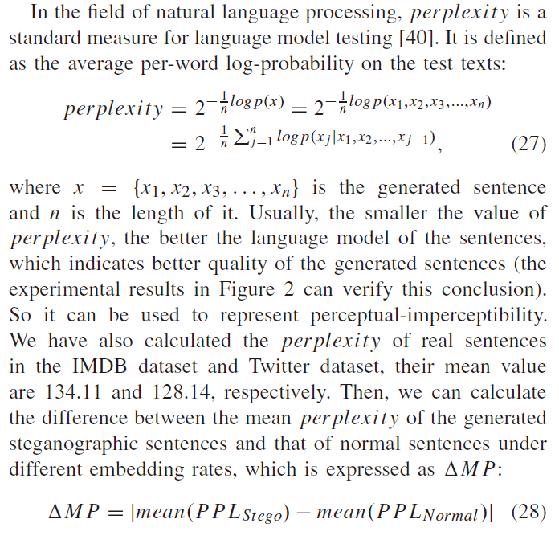
具体测试表格见论文表一表二。这里仅说明结论。
根据表一所示的结果，我们可以得出以下结论。首先，我们在第三节 Psic 效应分析，之前的模型的优化目标，如 RNN-Stega，是确保生成的条件概率的每个单词的句子尽可能高，从而使生成隐写句子的质量尽可能好。最终结果表明，所生成的隐写句子具有较低的困惑度值。但如 MP、KLD 和 JSD 的计算结果所示，它们与正常句子的总体统计分布存在巨大差异。其次，我们发现，在文本生成过程中，对条件概率分布使用算术编码可以减少在单词的条件概率分布与霍夫曼编码的比较中生成的隐写文本和普通文本之间的差异。然而，通过比较 RNN-Stega (HC) 和 RNN-Stega (AC) 的 KLD 和 JSD，因为它们对文本的总体统计分布缺乏约束，这两种编码方法生成的隐写文本与正常文本的总体统计分布仍有很大的差异（算术编码略优于霍夫曼编码）。第三，我们发现，我们引入 VAE 架构后，模型因此可以学习正常文本的整体统计分布特征和进一步约束生成的隐写文本在一定程度上，这可以显著减少生成的隐写句子和正常的句子的总体统计分布的差异，极大地提高了统计的不可感知性，在稍微失去困惑的情况下（不大，它不会显著影响生成的隐写句子的感知不可感知性）。
# 抗隐写分析能力
我们使用最新的隐写分析模型检测 VAE-Stega 模型和 RNN-Stega
模型在不同条件概率编码方法 (霍夫曼编码 (表 1) 和算术编码 (表 2) 下生成的隐写句子。我们使用在分类任务中常用的几个评估指标来评估我们的模型的性能，即准确率 (Acc) 和召回率 (R)。
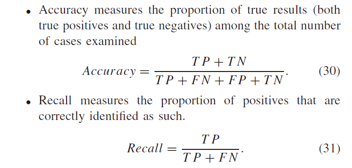
TP 表示被模型预测为正的正样本的数量，FP 表示预测为正的负样本数量，FN 表示预测为负的正样本数量，TN 表示预测为负的负样本数量。
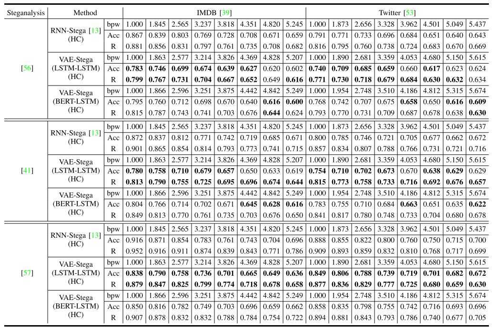
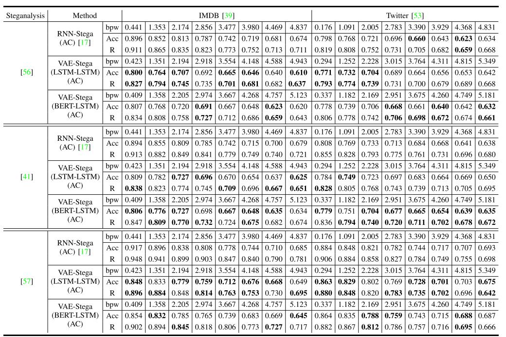
从表一表二结果中，我们可以得出以下结论。
- 首先，虽然提出的 VAE-Stega 模型和 RNN-Stega 模型在隐写句子生成、条件概率编码和秘密信息隐藏等方面是一致的，但我们在隐写句子生成过程中考虑了正常句子的总体统计分布特征，大大提高了 VAE-Stega 生成的隐写句子的统计不可感知性，也大大提高了其抗隐写分析的能力。
- 其次，表一表二的结果再次证实了 Psic 效应，即随着嵌入率的提高，不同模型在不同数据集中生成的隐写分析文本的检测精度逐渐降低。然而，值得注意的是，我们认为这是当前隐写文本生成方法框架的独特现象：使用一个设计良好的模型来从大量的正常句子学习统计语言模型，然后实现秘密信息隐藏通过编码的条件概率分布的文本生成过程。这种方法在生成每个单词时截断了它们的条件概率。随着嵌入率的增加，截断的条件概率分布逐渐接近真实分布，因此生成的隐写文本中每个单词的条件概率分布的差逐渐接近正常句子的差。虽然这种现象可能很特殊，但我们认为它应该被视为这种隐写策略的一个特征，而不是一种缺点。毕竟，在实际使用方面，我们确实希望当嵌入率相对较大时，我们仍然能保持相对较小的隐写检测精度。
- 此外，需要注意的是，表一、表二中的一些结果似乎表明，VAEStega (bertlstm) 的性能比 VAE-Stega (LSTM-LSTM) 更差。这并不意味着我们认为 BERT 的特征提取能力低于 LSTM。实际上，这是因为我们直接使用了已经发布的训练过的 BERT 模型。它已经对我们的其他数据集进行了预训练，这可能会影响其性能。但是 VAE-Stega (LSTM-LSTM) 是从头开始训练的，所以 VAE-Stega (LSTM-LSTM) 的编码器和解码器使用相同的单词嵌入空间。
# 结论
两大挑战：
- 如何自动生成一个语义完整、足够自然的信息载体
- 即使可以解决第一个挑战，如何进一步保证这些生成的隐写载体的不可感知性
解决第二个挑战，本文提出了一种新的隐写法 VAE-Stega。我们使用编码器在 VAE-Stega 学习整体统计分布特征的大量正常的文本，然后使用解码器 VAE-Stega 生成隐写句子符合统计语言模型以及正常句子的整体统计分布，以平衡和优化两个方面的不可感知性的 Psic 效应的影响。实验结果表明，与以往的方法相比，该模型能大大提高生成的隐写句子的不可感知性。